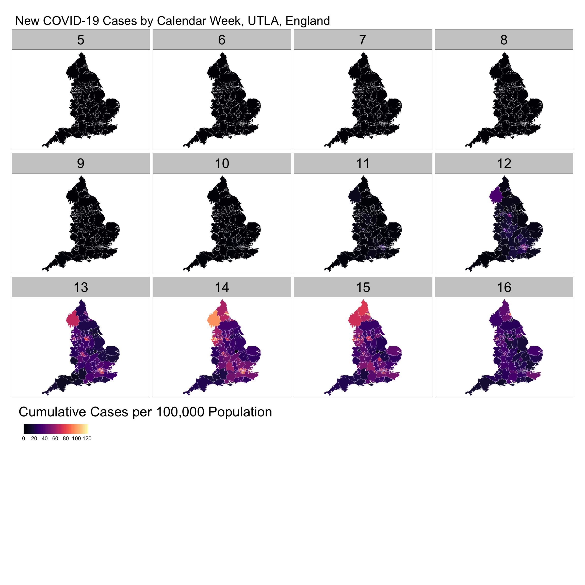
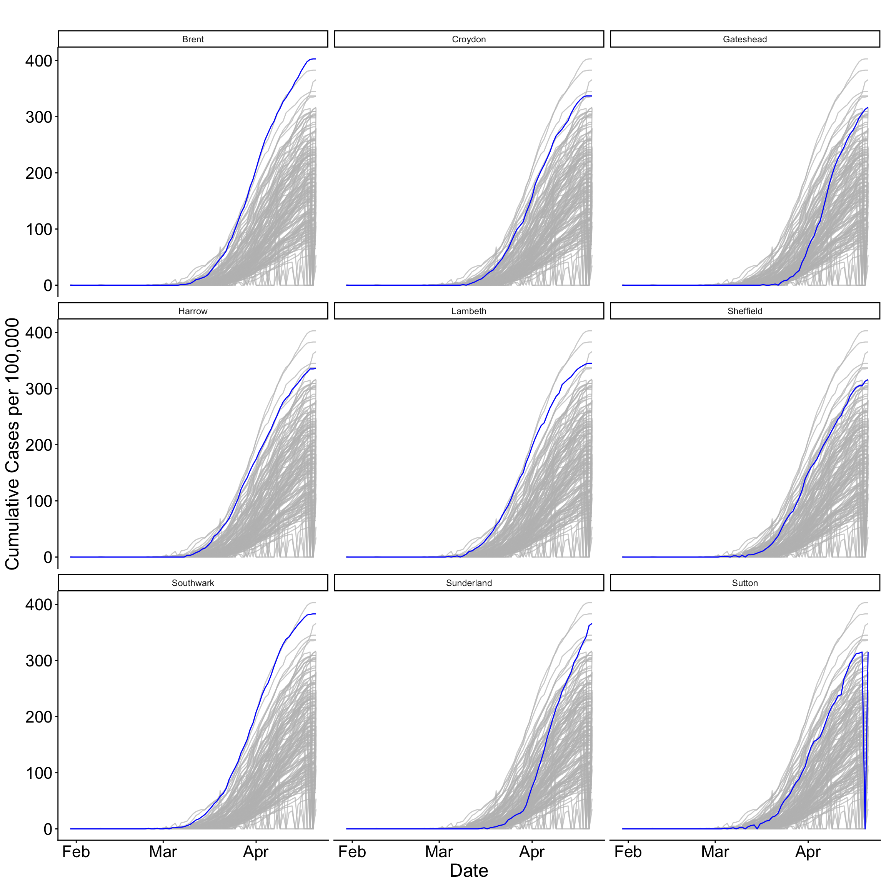
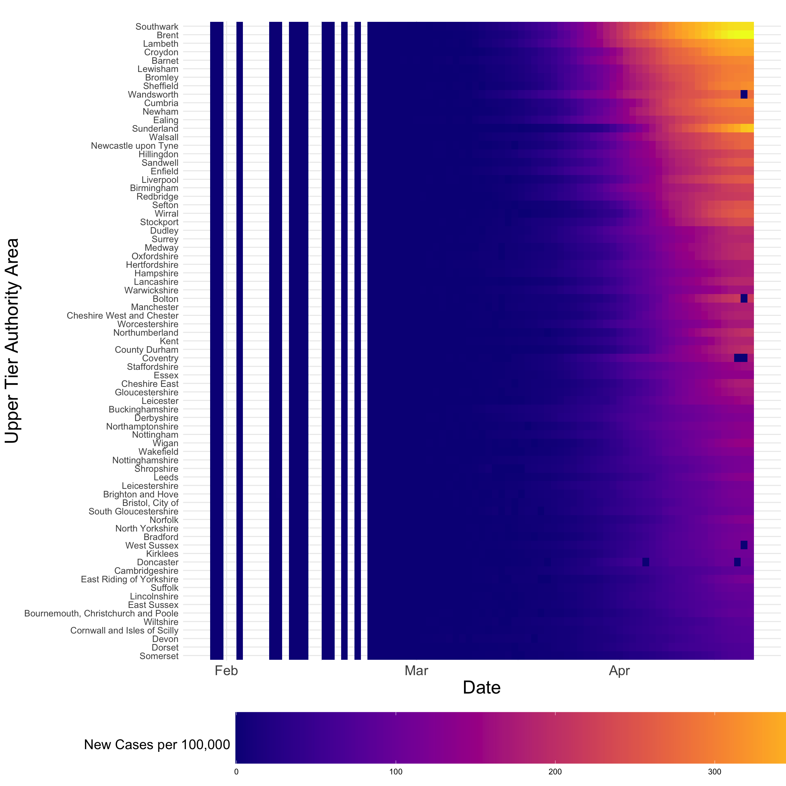
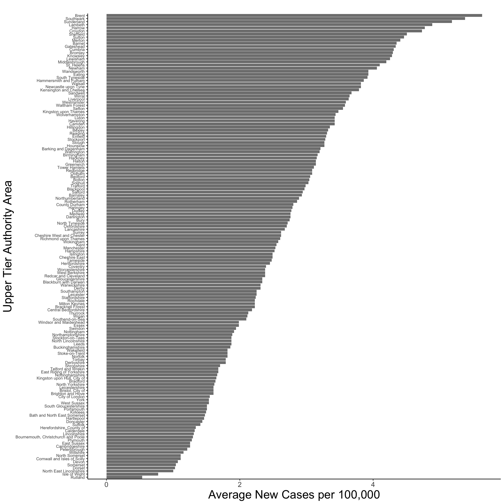
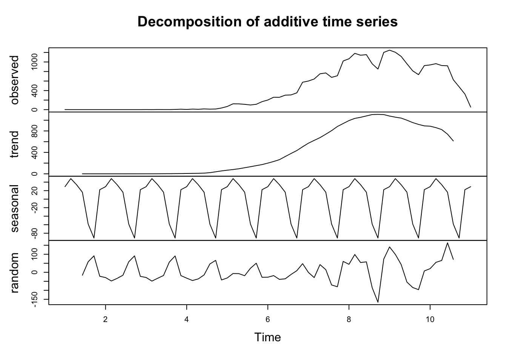
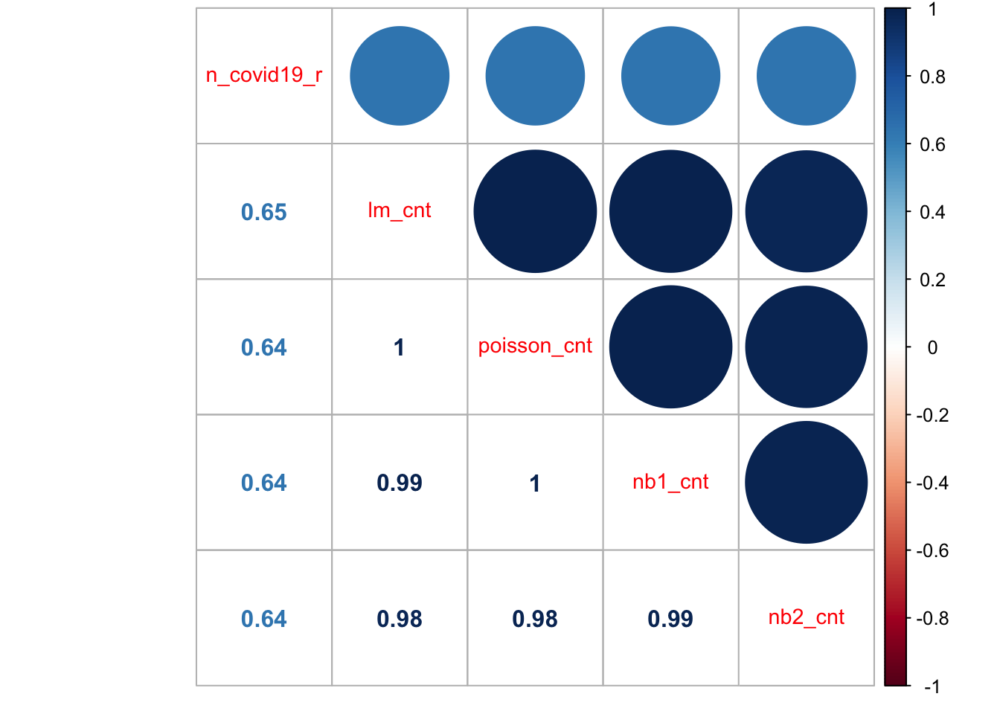

Chapter 10 Spatio-Temporal Analysis
This chapter provides an introduction to the complexities of spatio-temporal data and modelling. For modelling, we consider the Fixed Rank Kriging (FRK) framework developed by Cressie and Johannesson (2008). It enables constructing a spatial random effects model on a discretised spatial domain. Key advantages of this approach comprise the capacity to: (1) work with large data sets, (2) be scaled up; (3) generate predictions based on sparse linear algebraic techniques, and (4) produce fine-scale resolution uncertainty estimates.
The content of this chapter is based on:
Wikle, Zammit-Mangion, and Cressie (2019), a recently published book which provides a good overview of existing statistical approaches to spatio-temporal modelling and R packages.
Zammit-Mangion and Cressie (2017), who introduce the statistical framework and R package for modelling spatio-temporal used in this Chapter.
10.1 Dependencies
This chapter uses the following libraries:
# Data manipulation, transformation and visualisation
library(tidyverse)
# Nice tables
library(kableExtra)
# Simple features (a standardised way to encode vector data ie. points, lines, polygons)
library(sf)
# Spatial objects conversion
library(sp)
# Thematic maps
library(tmap)
# Nice colour schemes
library(viridis)
# Obtain correlation coefficients
library(corrplot)
# Highlight data on plots
library(gghighlight)
# Analysing spatio-temporal data
#library(STRbook)
library(spacetime)
# Date parsing and manipulation
library(lubridate)
# Applied statistics
library(MASS)
# Statistical tests for linear regression models
library(lmtest)
# Fit spatial random effects models
library(FRK)
# Exportable regression tables
library(jtools)10.2 Data
For this chapter, we will use data on:
COVID-19 confirmed cases from 30th January, 2020 to 21st April, 2020 from Public Health England via the GOV.UK dashboard;
resident population characteristics from the 2011 census, available from the Office of National Statistics; and,
2019 Index of Multiple Deprivation (IMD) data from GOV.UK and published by the Ministry of Housing, Communities & Local Government. The data are at the ONS Upper Tier Local Authority (UTLA) level - also known as Counties and Unitary Authorities.
For a full list of the variables included in the data sets used in this chapter, see the readme file in the sta data folder.28. Before we get our hands on the data, there are some important concepts that need to be introduced. They provide a useful framework to understand the complex structure of spatio-temporal data. Let’s start by first highlighling the importance of spatio-temporal analysis.
10.3 Why Spatio-Temporal Analysis?
Investigating the spatial patterns of human processes as we have done so far in this book only offers a partial incomplete representation of these processes. It does not allow understanding of the temporal evolution of these processes. Human processes evolve in space and time. Human mobility is a inherent geographical process which changes over the course of the day, with peaks at rush hours and high concentration towards employment, education and retail centres. Exposure to air pollution changes with local climatic conditions, and emission and concentration of atmospheric pollutants which fluctuate over time. The rate of disease spread varies over space and may significantly change over time as we have seen during the current outbreak, with flattened or rapid declining trends in Australia, New Zealand and South Korea but fast proliferation in the United Kingdom and the United States. Only by considering time and space together we can address how geographic entities change over time and why they change. A large part of how and why of such change occurs is due to interactions across space and time, and multiple processes. It is essential to understand the past to inform our understanding of the present and make predictions about the future.
10.3.1 Spatio-temporal Data Structures
A first key element is to understand the structure of spatio-temporal data. Spatio-temporal data incorporate two dimensions. At one end, we have the temporal dimension. In quantitative analysis, time-series data are used to capture geographical processes at regular or irregular intervals; that is, in a continuous (daily) or discrete (only when a event occurs) temporal scale. At another end, we have the spatial dimension. We often use spatial data as temporal aggregations or temporally frozen states (or ‘snapshots’) of a geographical process - this is what we have done so far. Recall that spatial data can be capture in different geographical units, such as areal or lattice, points, flows or trajectories - refer to the introductory lecture in Week 1. Relatively few ways exist to formally integrate temporal and spatial data in consistent analytical framework. Two notable exceptions in R are the packages TraMiner (Gabadinho et al. 2009) and spacetime (Pebesma and others 2012). We use the class definitions defined in the R package spacetime. These classes extend those used for spatial data in sp and time-series data in xts. Next a brief introduction to concepts that facilitate thinking about spatio-temporal data structures.
10.3.1.1 Type of Table
Spatio-temporal data can be conceptualised as three main different types of tables:
time-wide: a table in which columns correspond to different time points
space-wide: a table in which columns correspond to different spatial location
long formats: a table in which each row-column pair corresponds to a specific time and spatial location (or space coordinate)
Note that data in long format are space inefficient because spatial coordinates and time attributes are required for each data point. Yet, data in this format are relatively easy to manipulate via packages such as
dplyrandtidyr, and visualise usingggplot2. These packages are designed to work with data in long format.
10.3.1.2 Type of Spatio-Temporal Object
To integrate spatio-temporal data, spatio-temporal objects are needed. We consider four different spatio-temporal frames (STFs) or objects which can be defined via the package spacetime:
Full grid (STF): an object containing data on all possible locations in all time points in a sequence of data;
Sparse grid (STS): an object similar to STF but only containing non-missing space-time data combinations;
Irregular (STI): an object with an irregular space-time data structure, where each point is allocated a spatial coordinate and a time stamp;
Simple Trajectories (STT): an object containig a sequence of space-time points that form trajectories.
More details on these spatio-temporal structures, construction and manipulation, see Pebesma and others (2012). Enough theory, let’s code!
10.4 Data Wrangling
This section illustrates the complexities of handling spatio-temporal data. It discusses good practices in data manipulation and construction of a Space Time Irregular Data Frame (STIDF) object. Three key requirements to define a STFDF object are:
Have a data frame in long format i.e. a location-time pair data frame
Define a time stamp
Construct the spatio-temporal object of class STIDF by indicating the spatial and temporal coordinates
Let’s now read all the required data. While we can have all data in a single data frame, you will find helpful to have separate data objects to identify:
spatial locations
temporal units
data
These data objects correspond to locs, time, and covid19 and censusimd below. Throughout the chapter you will notice that we switch between the various data frames when convinient, depending on the operation.
# clear workspace
rm(list=ls())
# read ONS UTLA shapefile
utla_shp <- st_read("data/sta/ons_utla.shp") ## Reading layer `ons_utla' from data source `/Users/Franciscorowe 1/Dropbox/Francisco/uol/teaching/envs453/202122/san/data/sta/ons_utla.shp' using driver `ESRI Shapefile'
## Simple feature collection with 150 features and 11 fields
## geometry type: MULTIPOLYGON
## dimension: XY
## bbox: xmin: 134112.4 ymin: 11429.67 xmax: 655653.8 ymax: 657536
## projected CRS: Transverse_Mercator# create table of locations
locs <- utla_shp %>% as.data.frame() %>%
dplyr::select(objct, cty19c, ctyu19nm, long, lat, st_rs)
# read time data frame
time <- read_csv("data/sta/reporting_dates.csv")
# read COVID-19 data in long format
covid19 <- read_csv("data/sta/covid19_cases.csv")
# read census and IMD data
censusimd <- read_csv("data/sta/2011census_2019imd_utla.csv")If we explore the structure of the data via head and str, we can see we have data on daily and cumulative new COVID-19 cases for 150 spatial units (i.e. UTLAs) over 71 time points from January 30th to April 21st. We also have census and IMD data for a range of attributes.
## # A tibble: 3 x 6
## Area.name Area.code Area.type date Daily.lab.confi… Cumulative.lab.c…
## <chr> <chr> <chr> <date> <dbl> <dbl>
## 1 Barking a… E09000002 Upper tier… 2020-01-30 0 0
## 2 Barnet E09000003 Upper tier… 2020-01-30 0 0
## 3 Barnsley E08000016 Upper tier… 2020-01-30 0 0Once we have understood the structure of the data, we first need to confirm if the covid19 data are in wide or long format. Luckily they are in long format; otherwise, we would have needed to transform the data from wide to long format. Useful functions to achieve this include pivot_longer (pivot_longer) which has superseded gather (spread) in the tidyr package. Note that the covid19 data frame has 10,650 observations (i.e. rows); that is, 150 UTLAs * 71 daily observations.
We then define a regular time stamp for our temporal data. We use the lubridate package to do this. A key advantage of lubridate is that it automatically recognises the common separators used when recording dates (“-”, “/”, “.”, and ""). As a result, you only need to focus on specifying the order of the date elements to determine the parsing function applied. Below we check the structure of our time data, define a time stamp and create separate variables for days, weeks, months and year.
Note that working with dates can be a complex task. A good discussion of these complexities is provided here.
## [1] "2020-01-30" "2020-01-30" "2020-01-30" "2020-01-30" "2020-01-30"## [1] "Date"# separate date variable into day,week, month and year variables
covid19$day <- day(covid19$date)
covid19$week <- week(covid19$date) # week of the year
covid19$month <- month(covid19$date)
covid19$year <- year(covid19$date)Once defined the time stamp, we need to add the spatial information contained in our shapefile to create a spatio-temporal data frame.
We now have all the components to build a spatio-temporal object of class STIDF using STIDF from the spacetime package:
# identifying spatial fields
spat_part <- as(dplyr::select(covid19_spt, -c(bng_e, bng_n, Area.code, Area.type, Daily.lab.confirmed.cases, Cumulative.lab.confirmed.cases, date, day, week, month, year)), Class = "Spatial")## Warning in showSRID(uprojargs, format = "PROJ", multiline = "NO", prefer_proj
## = prefer_proj): Discarded datum Unknown based on Airy 1830 ellipsoid in Proj4
## definition## Warning in showSRID(SRS_string, format = "PROJ", multiline = "NO", prefer_proj =
## prefer_proj): Discarded datum D_unknown in Proj4 definition# identifying temporal fields
temp_part <- covid19_spt$date
# identifying data
covid19_data <- covid19_spt %>% dplyr::select(c(Area.code, Area.type, date, Daily.lab.confirmed.cases, Cumulative.lab.confirmed.cases, day, week, month, year)) %>%
as.data.frame()
# construct STIDF object
covid19_stobj <- STIDF(sp = spat_part, # spatial fields
time = temp_part, # time fields
data = covid19_data) # data
class(covid19_stobj)## [1] "STIDF"
## attr(,"package")
## [1] "spacetime"We now add census and IMD variables. For the purposes of this Chapter, we only add total population and long-term sick or disabled population counts. You can add more variables by adding their names in the select function.
10.5 Exploring Spatio-Temporal Data
We now have all the required data in place. In this section various methods of data visualisation are illustrated before key dimensions of the data are explored. Both of these types of exploration can be challenging as one or more dimensions in space and one in time need to be interrogated.
10.5.1 Visualisation
In the context spatio-temporal data, a first challenge is data visualization. Visualising more than two dimensions of spatio-temporal data, so it is helpful to slice or aggregate the data over a dimension, use color, or build animations through time. Before exploring the data, we need to define our key variable of interest; that is, the number of confirmed COVID-19 cases per 100,000 people. We also compute the cumulative number of confirmed COVID-19 cases per 100,000 people as it may be handy in some analyses.
Fisrt create variable to be analysed:
# rate of new covid-19 infection
covid19_spt$n_covid19_r <- round( (covid19_spt$Daily.lab.confirmed.cases / covid19_spt$Residents) * 100000)
covid19$n_covid19_r <- round( (covid19$Daily.lab.confirmed.cases / covid19$Residents) * 100000 )
# risk of cumulative covid-19 infection
covid19_spt$c_covid19_r <- round( (covid19_spt$Cumulative.lab.confirmed.cases / covid19_spt$Residents) * 100000)
covid19$c_covid19_r <- round( (covid19$Cumulative.lab.confirmed.cases / covid19$Residents) * 100000)10.5.1.1 Spatial Plots
One way to visualise the data is using spatial plots; that is, snapshots of a geographic process for a given time period. Data can be mapped in different ways using clorepleth, countour or surface plots. The key aim of these maps is to understand how the overall extent of spatial variation and local patterns of spatial concentration change over time. Below we visualise the weekly number of confirmed COVID-19 cases per 100,000 people.
Note that Weeks range from 5 to 16 as they refer to calendar weeks. Calendar week 5 is when the first COVID-19 case in England was reported.
# create data frame for new cases by week
daycases_week <- covid19_spt %>% group_by(week, ctyu19nm, as.character(cty19c), Residents) %>%
summarise(n_daycases = sum(Daily.lab.confirmed.cases)) ## `summarise()` has grouped output by 'week', 'ctyu19nm', 'as.character(cty19c)'. You can override using the `.groups` argument.# weekly rate of new covid-19 infection
daycases_week$wn_covid19_r <- (daycases_week$n_daycases / daycases_week$Residents) * 100000
# map
legend_title = expression("Cumulative Cases per 100,000 Population")
tm_shape(daycases_week) +
tm_fill("wn_covid19_r", title = legend_title, palette = magma(256), style ="cont", legend.hist=FALSE, legend.is.portrait=FALSE) +
tm_facets(by = "week", ncol = 4) +
tm_borders(col = "white", lwd = .1) + # add borders +
tm_layout(bg.color = "white", # change background colour
legend.outside = TRUE, # legend outside
legend.outside.position = "bottom",
legend.stack = "horizontal",
legend.title.size = 2,
legend.width = 1,
legend.height = 1,
panel.label.size = 3,
main.title = "New COVID-19 Cases by Calendar Week, UTLA, England") ## Warning in pre_process_gt(x, interactive = interactive, orig_crs =
## gm$shape.orig_crs): legend.width controls the width of the legend within a map.
## Please use legend.outside.size to control the width of the outside legend
The series of maps reveal a stable pattern of low reported cases from calendar weeks 5 to 11. From week 12 a number of hot spots emerged, notably in London, Birmingham, Cumbria and subsequently around Liverpool. The intensity of new cases seem to have started to decline from week 15; yet, it is important to note that week 16 display reported cases for only two days.
10.5.1.2 Time-Series Plots
Time-series plots can be used to capture a different dimension of the process in analysis. They can be used to better understand changes in an observation location, an aggregation of observations, or multiple locations simultaneously over time. We plot the cumulative number of COVID-19 cases per 100,000 people for UTLAs reporting over 310 cases. The plots identify the UTLAs in London, Newcastle and Sheffield reporting the largest numbers of COVID-19 cases. The plots also reveal that there has been a steady increase in the number of cases, with some differences. While cases have steadily increase in Brent and Southwark since mid March, the rise has been more sudden in Sunderland. The plots also reveal a possible case of misreporting in Sutton towards the end of the series.
tsp <- ggplot(data = covid19_spt,
mapping = aes(x = date, y = c_covid19_r,
group = ctyu19nm))
tsp + geom_line(color = "blue") +
gghighlight(max(c_covid19_r) > 310, use_direct_label = FALSE) +
labs(title= paste(" "), x="Date", y="Cumulative Cases per 100,000") +
theme_classic() +
theme(plot.title=element_text(size = 20)) +
theme(axis.text=element_text(size=16)) +
theme(axis.title.y = element_text(size = 18)) +
theme(axis.title.x = element_text(size = 18)) +
theme(plot.subtitle=element_text(size = 16)) +
theme(axis.title=element_text(size=20, face="plain")) +
facet_wrap(~ ctyu19nm)
10.5.1.3 Hovmöller Plots
An alternative visualisation is a Hovmöller plot - sometimes known as heatmap. It is a two-dimensional space-time representation in which space is collapsed onto one dimension against time. Hovmöller plots can easily be generated if the data are arranged on a space-time grid; however, this is rarely the case. Luckily we have ggplot! which can do magic rearranging the data as needed. Below we produce a Hovmöller plot for UTLAs with resident populations over 260,000. The plot makes clear that the critical period of COVID-19 spread has been during April despite the implementation of a series of social distancing measures by the government.
ggplot(data = dplyr::filter(covid19_spt, Residents > 260000),
mapping = aes(x= date, y= reorder(ctyu19nm, c_covid19_r), fill= c_covid19_r)) +
geom_tile() +
scale_fill_viridis(name="New Cases per 100,000", option ="plasma", begin = 0, end = 1, direction = 1) +
theme_minimal() +
labs(title= paste(" "), x="Date", y="Upper Tier Authority Area") +
theme(legend.position = "bottom") +
theme(legend.title = element_text(size=15)) +
theme(axis.text.y = element_text(size=10)) +
theme(axis.text.x = element_text(size=15)) +
theme(axis.title=element_text(size=20, face="plain")) +
theme(legend.key.width = unit(5, "cm"), legend.key.height = unit(2, "cm"))
10.5.1.4 Interactive Plots
Interactive visualisations comprise very effective ways to understand spatio-temporal data and they are now fairly accessible. Interactive visualisations allow for a more data-immersive experience, and enable exploration of the data without having to resort to scripting. Here is when the use of tmap shines as it does not only enables easily creating nice static maps but also interactive maps! Below an interactive map for a time snapshot of the data (i.e. 2020-04-14) is produced, but with a bit of work layers can be added to display multiple temporal slices of the data.
# map
legend_title = expression("Cumulative Cases per 100,000 Population")
imap = tm_shape(dplyr::filter(covid19_spt[,c("ctyu19nm", "date", "c_covid19_r")], as.character(date) == "2020-04-14"), labels = "Area.name") +
tm_fill("c_covid19_r", title = legend_title, palette = magma(256), style ="cont", legend.is.portrait=FALSE, alpha = 0.7) +
tm_borders(col = "white") +
#tm_text("ctyu19nm", size = .4) +
tm_layout(bg.color = "white", # change background colour
legend.outside = TRUE, # legend outside
legend.title.size = 1,
legend.width = 1) To view the map on your local machines, execute the code chunk below removing the # sign.
Alternative data visualisation tools are animations, telliscope and shiny. Animations can be constructed by plotting spatial data frame-by-frame, and then stringing them together in sequence. A useful R packages gganimate and tmap! See Lovelace, Nowosad, and Muenchow (2020). Note that the creation of animations may require external dependencies; hence, they have been included here. Both telliscope and shiny are useful ways for visualising large spatio-temporal data sets in an interactive ways. Some effort is required to deploy these tools.
10.5.2 Exploratory Analysis
In addition to visualising data, we often want to obtain numerical summaries of the data. Again, innovative ways to reduce the inherent dimensionality of the data and examine dependence structures and potential relationships in time and space are needed. We consider visualisations of empirical spatial and temporal means, dependence structures and some basic time-series analysis.
10.5.2.1 Means
Empirical Spatial Mean
The empirical spatial mean for a data set can be obtained by averaging over time points for one location. In our case, we can compute the empirical spatial mean by averaging the daily rate of new COVID-19 cases for UTLAs between January 30th and April 21st. It reveals that Brent, Southwark and Sunderland report an average daily infection rate of over 5 new cases per 100,000 people, whereas Rutland and Isle of Wight display an average of less than 1.
# compute empirical spatial mean
sp_av <- covid19_spt %>% group_by(ctyu19nm) %>% # group by spatial unit
summarise(sp_mu_emp = mean(n_covid19_r))
# plot empirical spatial mean
ggplot(data=sp_av) +
geom_col( aes( y = reorder(ctyu19nm, sp_mu_emp), x = sp_mu_emp) , fill = "grey50") +
theme_classic() +
labs(title= paste(" "), x="Average New Cases per 100,000", y="Upper Tier Authority Area") +
theme(legend.position = "bottom") +
theme(axis.text.y = element_text(size=7)) +
theme(axis.text.x = element_text(size=12)) +
theme(axis.title=element_text(size=20, face="plain"))
Empirical Temporal Mean
The empirical temporal mean for a data set can be obtained by averaging across spatial locations for a time point. In our case, we can compute the empirical temporal mean by averaging the rate of new COVID-19 cases over UTLAs by day. The empirical temporal mean is plotted below revealing a peak of 8.32 number of new cases per 100,000 people the 7th of April, steadily decreasing to 0.35 for the last reporting observation in our data; that is, April 21st.
Note the empirical temporal mean is smoothed via local polynomial regression fitting; hence below zero values are reported between February and March.
# compute temporal mean
tm_av <- covid19 %>% group_by(date) %>%
summarise(tm_mu_emp = mean(n_covid19_r))
# plot temporal mean + trends for all spatial units
ggplot() +
geom_line(data = covid19, mapping = aes(x =date, y = n_covid19_r,
group = Area.name), color = "gray80") +
theme_classic() +
geom_smooth(data = tm_av, mapping = aes(x =date, y = tm_mu_emp),
alpha = 0.5,
se = FALSE) +
labs(title= paste(" "), x="Date", y="Cumulative Cases per 100,000") +
theme_classic() +
theme(plot.title=element_text(size = 18)) +
theme(axis.text=element_text(size=14)) +
theme(axis.title.y = element_text(size = 16)) +
theme(axis.title.x = element_text(size = 16)) +
theme(plot.subtitle=element_text(size = 16)) +
theme(axis.title=element_text(size=18, face="plain"))
10.5.2.2 Dependence
Spatial Dependence
As we know spatial dependence refers to the spatial relationship of a variable’s values for a pairs of locations at a certain distance apart, so that are more similar (or less similar) than expected for randomly associated pairs of observations. Patterns of spatial dependence may change over time. In the case of a disease outbreak patterns of spatial dependence can change very quickly as new cases emerge and social distancing measures are implemented. Chapter 6 illustrates how to measure spatial dependence in the context of spatial data.
Challenge 1: Measure how spatial dependence change over time. Hint: compute the Moran’s I on the rate of new COVID-19 cases (i.e.
n_covid19_rin thecovid19data frame) at multiple time points.
Note: recall that the problem of ignoring the dependence in the errors when doing OLS regression is that the resulting standard errors and prediction standard errors are inappropriate. In the case of positive dependence, which is the most common case in spatio-temporal data (recall Tobler’s law), the standard errors and prediction standard errors are underestimated. This is if dependence is ignored, resulting in a false sense of how good the estimates and predictions really are.
Temporal Dependence
As for spatial data, dependence can also exists in temporal data. Temporal dependence or temporal autocorrelation exists when a variable’s value at time \(t\) is dependent on its value(s) at \(t-1\). More recent observations are often expected to have a greater influence on present observations. A key difference between temporal and spatial dependence is that temporal dependence is unidirectional (i.e. past observations can only affect present or future observations but not inversely), while spatial dependence is multidirectional (i.e. an observation in a spatial unit can influence and be influenced by observations in multiple spatial units).
Before measuring the temporal dependence is our time-series, a time-series object needs to be created with a time stamp and given cycle frequency. A cycle frequency refers to when a seasonal pattern is repeated. We consider a time series of the total number of new COVID-19 cases per 100,000 (i.e. we sum cases over UTLAs by day) and the frequency set to 7 to reflect weekly cycles. So we end up with a data frame of length 71.
# create a time series object
total_cnt <- covid19 %>% group_by(date) %>%
summarise(new_cases = sum(n_covid19_r))
total_cases_ts <- ts(total_cnt$new_cases,
start = 1,
frequency =7)There are various ways to test for temporal autocorrelation. An easy way is to compute the correlation coefficient between a time series measured at time \(t\) and its lag measured at time \(t-1\). Below we measure the temporal autocorrelation in the rate of new COVID-19 cases per 100,000 people. A correlation of 0.97 is returned indicating high positive autocorrelation; that is, high (low) past numbers of new COVID-19 cases per 100,000 people tend to correlate with higher (lower) present numbers of new COVID-19 cases. The Durbin-Watson test is often used to test for autocorrelation in regression models.
# create lag term t-1
lag_new_cases <- total_cnt$new_cases[-1]
total_cnt <- cbind(total_cnt[1:70,], lag_new_cases)
cor(total_cnt[,2:3])## new_cases lag_new_cases
## new_cases 1.000000 0.974284
## lag_new_cases 0.974284 1.000000Time Series Components
In addition to temporal autocorrelation, critical to the analysis of time-series are its constituent components. A time-series is generally defined by three key components:
Trend: A trend exists when there is a long-term increase or decrease in the data.
Seasonal: A seasonal pattern exists when a time series is affected by seasonal factors and is of a fixed and known frequency. Seasonal cycles can occur at various time intervals such as the time of the day or the time of the year.
Cyclic (random): A cycle exists when the data exhibit rises and falls that are not of a fixed frequency.
To understand and model a time series, these components need to be identified and appropriately incorporated into a regression model. We illustrate these components by decomposing our time series for total COVID-19 cases below. The top plot shows the observed data. Subsequent plots display the trend, seasonal and random components of the total number of COVID-19 cases on a weekly periodicity. They reveal a clear inverted U-shape trend and seasonal pattern. This idea that we can decompose data to extract information and understand temporal processes is key to understand the concept of basis functions to model spatio-temporal data, which will be introduced in the next section.
# decompose time series
dec_ts <- decompose(total_cases_ts)
# plot time series components
plot(dec_ts)
For a good introduction to time-series analysis in R, refer to Hyndman and Athanasopoulos (2018) and DataCamp.
10.6 Spatio-Temporal Data Modelling
Having some understanding of the spatio-temporal patterns of COVID-19 spread through data exploration, we are ready to start further examining structural relationships between the rate of new infections and local contextual factors via regression modelling across UTLAs. Specifically we consider the number of new cases per 100,000 people to capture the rate of new infections and only one contextual factor; that is, the share of population suffering from long-term sickness or disabled. We will consider some basic statistical models, of the form of linear regression and generalized linear models, to account for spatio-temporal dependencies in the data. Note that we do not consider more complex structures based on hierarchical models or spatio-temporal weighted regression models which would be the natural step moving forward.
As any modelling approach, spatio-temporal statistical modelling has three principal goals:
predicting values of a given outcome variable at some location in space within the time span of the observations and offering information about the uncertainty of those predictions;
performing statistical inference about the influence of predictors on an outcome variable in the presence of spatio-temporal dependence; and,
forecasting future values of an outcome variable at some location, offering information about the uncertainty of the forecast.
10.6.1 Intuition
The key idea on what follows is to use a basic statistical regression model to understand the relationship between the share of new COVID-19 infections and the share of population suffering from long-term illness, accounting for spatio-temporal dependencies. We will consider what is known as a trend-surface regression model which assumes that spatio-temporal dependencies can be accounted for by “trend” components and incorporate as predictors in the model. Formally we consider the regression model below which seeks to account for spatial and temporal trends.
\[y(s_{i}, t_{j}) = \beta_{0} + \beta_{k}x(s_{i}, t_{j}) + e(s_{i}, t_{j})\]
where \(\beta_{0}\) is the intercept and \(\beta_{k}\) represents a set of regression coefficients associated with \(x(s_{i}, t_{j})\); the \(k\) indicates the number of covariates at spatial location \(s_{i}\) and time \(t_{j}\); \(e\) represents the regression errors which are assumed to follow a normal distribution. The key difference to aproaches considered in previous chapters is the incorporation of space and time together. As we learnt from the previous section, this has implications are we now have two sources of dependence: spatial and temporal autocorrelation, as well as seasonal and trend components. This has implications for modelling as we now need to account for all of these components if we are to establish any relationship between \(y\) and \(x\).
A key implication is how we consider the set of covariates represented by \(x\). Three key types can be identified:
spatial-variant, temporal-invariant covariates: these are attributes which may vary across space but be temporally invariant, such as geographical distances;
spatial-invariant, temporal-variant covariates: these are attributes which do not vary across space but change over time; and,
spatial-variant, temporal-variant covariates: these are attributes which vary over both space and time;
Note that what is variant or invariant will depend on the spatial and temporal scale of the analysis.
We can also consider spatio-temporal “basis functions”. Note that this is an important concept for the rest of the Chapter. What are basis functions then? If you think that spatio-temporal data represent a complex set of curves or surfaces in space, basis functions represent the components into which this set of curves can be decomposed. In this sense, basis functions operate in a similar fashion as the decomposition of time series considered above i.e. time series data can be decomposed into a trend, seasonal and random components and their sum can be used to represent the observed temporal trajectory. Basis functions offer an effective way to incorporate spatio-temporal dependencies. Thus, basis functions have the key goal of accounting for spatio-temporal dependencies as spatial weight matrices or temporal lags help accounting spatial autocorrelation in spatial models and temporal autocorrelation in time series analysis.
As standard regression coefficients, basis functions are related to \(y\) via coefficients (or weights). The difference is that we typically assume that basis functions are known while coefficients are random. Examples of basis functions include polynomials, splines, wavelets, sines and cosines so various linear combinations that can be used to infer potential spatio-temporal dependencies in the data. This is similar to deep learning models in which cases you provide, for example, an image and the model provides a classification of pixels. But you normally do not know what the classification represents (hence they are known as black boxes!) so further analysis on the classification is needed to understand what the model has attempted to capture. Basically basis functions are smoother functions to represent the observed data, and their objective to capture the spatial and temporal variability in the data as well as their dependence.
For our application, we start by considering a basic OLS regression model with the following basis functions to account spatial-temporal structures:
- overall mean;
- linear in lon-coordinate;
- linear in lat-coordinate;
- linear time daily trend;
- additional spatio-temporal basis functions which are presented below; and,
These basis functions are incorporated as independent variables in the regression model. Additionally, we also include the share of population suffering from long-term illness as we know it is highly correlated to the cumulative number of COVID-19 cases. The share of population suffering long-term illness is incorporated as a spatial-variant, temporal-invariant covariates given that rely in 2011 census data.
10.6.2 Fitting Spatio-Temporal Models
As indicated at the start of this Chapter, we use the FRK framework developed by Cressie and Johannesson (2008). It provides a scalable, relies on the use a spatial random effects model (with which we have some familiarity) and can be easily implemented in R by the use of the FRK package (Zammit-Mangion and Cressie 2017). In this framework, a spatially correlated errors can be decomposed using a linear combination of spatial basis functions, effectively addressing issues of spatial-temporal dependence and nonstationarity. The specification of spatio-temporal basis functions is a key component of the model and they can be generated automatically or by the user via the FRK package. We will use the automatically generated functions. While as we will notice they are difficult to interpret, user generated functions require greater understanding of the spatio-temporal structure of COVID-19 which is beyond the scope of this Chapter.
Prepare Data
The first step to create a data frame with the variables that we will consider for the analysis. We first remove the geometries to convert covid19_spt from a simple feature object to a data frame and then compute the share of long-term illness population.
# remove geometries
st_geometry(covid19_spt) <- NULL
# share of population in long-term illness
covid19_spt <- covid19_spt %>% mutate(
lt_illness = Longterm_sick_or_disabled / Residents
)Construct Basis Functions
We now build the set of basis functions. The can be constructed by using the function auto_basis from the FRK package. The function takes as arguments: data, nres (which is the number of “resolutions” or aggregation to construct); and type of basis function to use. We consider a single resolution of the default Gaussian radial basis function.
# build basis functions
G <- auto_basis(data = covid19_spt[,c("long","lat")] %>%
SpatialPoints(), # To sp obj
nres = 1, # One resolution
type = "Gaussian") # Gaussian BFs
# basis functions evaluated at data locations are then the covariates
S <- eval_basis(basis = G, # basis functions
s = covid19_spt[,c("long","lat")] %>%
as.matrix()) %>% # conv. to matrix
as.matrix() # conv. to matrix
colnames(S) <- paste0("B", 1:ncol(S)) # assign column namesAdd Basis Functions to Data Frame
We then prepare a data frame for the regression model, adding the weights extracted from the basis functions. These weights enter as covariates in our model. Note that the resulting number of basis functions is nine. Explore by executing colnames(S). Below we select only relevant variables for our model.
# selecting variables
reg_df <- cbind(covid19_spt, S) %>%
dplyr::select(ctyu19nm, n_covid19_r, long, lat, date, lt_illness, B1:B9)Fit Linear Regression
We now fit a linear model using lm including as covariates longitude, latitude, day, share of long-term ill population and the nine basis functions.
Recall that latitude refers to north/south from the equator and longitude refers to west/east from Greenwich. Further up north means a higher latitude score. Further west means higher longitude score. Scores for Liverpool (53.4084° N, 2.9916° W) are thus higher than for London (51.5074° N, 0.1278° W). This will be helpful for interpretation.
eq1 <- n_covid19_r ~ long + lat + date + lt_illness + .
lm_m <- lm(formula = eq1,
data = dplyr::select(reg_df, -ctyu19nm))
lm_m %>% summary()##
## Call:
## lm(formula = eq1, data = dplyr::select(reg_df, -ctyu19nm))
##
## Residuals:
## Min 1Q Median 3Q Max
## -7.9726 -1.6679 -0.4867 1.1702 22.5346
##
## Coefficients:
## Estimate Std. Error t value Pr(>|t|)
## (Intercept) -2.082e+03 2.839e+01 -73.354 < 2e-16 ***
## long -1.932e+00 3.620e-01 -5.336 9.7e-08 ***
## lat 3.390e+00 3.266e-01 10.380 < 2e-16 ***
## date 1.033e-01 1.245e-03 82.958 < 2e-16 ***
## lt_illness 3.276e+01 3.541e+00 9.250 < 2e-16 ***
## B1 7.556e+00 3.157e+00 2.393 0.0167 *
## B2 1.898e+00 1.409e+00 1.347 0.1780
## B3 1.750e+01 1.978e+00 8.847 < 2e-16 ***
## B4 -2.022e+00 2.742e+00 -0.737 0.4609
## B5 2.207e+00 2.233e+00 0.989 0.3229
## B6 -9.814e-01 2.498e+00 -0.393 0.6945
## B7 -2.031e-01 3.687e+00 -0.055 0.9561
## B8 -2.234e+00 2.801e+00 -0.797 0.4252
## B9 1.877e+00 2.543e+00 0.738 0.4604
## ---
## Signif. codes: 0 '***' 0.001 '**' 0.01 '*' 0.05 '.' 0.1 ' ' 1
##
## Residual standard error: 2.842 on 10636 degrees of freedom
## Multiple R-squared: 0.4169, Adjusted R-squared: 0.4162
## F-statistic: 585 on 13 and 10636 DF, p-value: < 2.2e-16Coefficients for explicitly specified spatial and temporal variables and the share of long-term ill population are all statistically significant. The interpretation of the regression coefficients is as usual; that is, one unit increase in a covariate relates to one unit increase in the dependent variable. For instance, the coefficient for long-term illness population indicates that UTLAs with a larger share of long-term ill population in one percentage point tend to have 328 more new COVID-19 cases per 100,000 people! on average. The coefficient for date reveals a strong positive temporal dependence with an average increase in the number of new cases per 100,000 people over time. The coefficient for latitude indicates as we move north the number of new COVID-19 cases per 100,000 people tends to be higher but lower if we move west.
While overall the model provides some understanding of the spatio-temporal structure of the spread of COVID-19, the overall fit of the model is relatively poor. The \(R^{2}\) reveals that the model explains only 4.2% of the variability of the spread of COVID-19 cases, reflecting the complexity of modelling spatio-temporal processes. Also, except for two, the coefficients associated to the basis functions are statistically insignificant. A key issue that we have ignored so far is the fact that our dependent variable is a count and is highly skewed - refer back to Section [8.4 Exploratory Analysis].
Challenge 2: Explore a model with only spatial components (i.e.
longandlat) or only temporal components (day). What model returns the largest \(R^{2}\)?
Poisson Regression
A Poisson regression model provides a more appropriate framework to address these issues. We do this fitting a general linear model (or GLM) specifying the family function to be a Poisson.
# estimate a poisson model
poisson_m1 <- glm(eq1,
family = poisson("log"), # Poisson + log link
data = dplyr::select(reg_df, -ctyu19nm))
poisson_m1 %>% summary()##
## Call:
## glm(formula = eq1, family = poisson("log"), data = dplyr::select(reg_df,
## -ctyu19nm))
##
## Deviance Residuals:
## Min 1Q Median 3Q Max
## -5.7454 -1.2043 -0.6993 0.3764 7.8981
##
## Coefficients:
## Estimate Std. Error z value Pr(>|z|)
## (Intercept) -1.027e+03 8.168e+00 -125.699 < 2e-16 ***
## long -8.534e-01 9.080e-02 -9.399 < 2e-16 ***
## lat 1.456e+00 7.617e-02 19.115 < 2e-16 ***
## date 5.153e-02 3.871e-04 133.121 < 2e-16 ***
## lt_illness 1.166e+01 7.701e-01 15.139 < 2e-16 ***
## B1 3.418e+00 8.005e-01 4.270 1.96e-05 ***
## B2 4.414e-01 3.249e-01 1.359 0.17421
## B3 8.531e+00 5.480e-01 15.568 < 2e-16 ***
## B4 -7.129e-01 5.865e-01 -1.215 0.22418
## B5 1.639e+00 5.048e-01 3.246 0.00117 **
## B6 -1.282e+00 5.618e-01 -2.283 0.02245 *
## B7 -3.572e-01 8.411e-01 -0.425 0.67102
## B8 -1.003e+00 6.262e-01 -1.602 0.10917
## B9 1.655e+00 6.268e-01 2.640 0.00829 **
## ---
## Signif. codes: 0 '***' 0.001 '**' 0.01 '*' 0.05 '.' 0.1 ' ' 1
##
## (Dispersion parameter for poisson family taken to be 1)
##
## Null deviance: 51245 on 10649 degrees of freedom
## Residual deviance: 24458 on 10636 degrees of freedom
## AIC: 42364
##
## Number of Fisher Scoring iterations: 5The Poisson model seems to provide a more appropriate functional forms to identify the strength of the relationship between new COVID-19 cases and spatio-temporal dependencies as captured by a greater number (relative to the linear model) of basis functions coefficients becoming statistically significant. Yet, the Poisson model assumes that the mean and variance of the COVID-19 cases is the same. But, given the distribution of our dependent variable, its variance is likely to be greater than the mean. That means the data exhibit “overdispersion”. How do we know this? An estimate of the dispersion is given by the ratio of the deviance to the total degrees of freedom (the number of data points minus the number of covariates). In this case the dispersion estimate is:
## [1] 2.29953which is clearly greater than 1! i.e. the data are overdispersed.
Quasipoisson Regression
An approach to account for overdispersion is to use quasipoisson when calling glm. The quasi-Poisson model assumes that the variance is proportional to the mean, and that the constant of the proportionality is the over-dispersion parameter. This model corrects the standard error of the estimated coefficients. So only p-values and t values are affected. No changes are recorded in terms of residual deviance (24458) and median of deviance residuals (-0.6993), compared to the standard Poisson model.
# estimate a quasipoisson model
qpoisson_m1 <- glm(eq1,
family = quasipoisson("log"), # QuasiPoisson + log link
data = dplyr::select(reg_df, -ctyu19nm))
qpoisson_m1 %>% summary()##
## Call:
## glm(formula = eq1, family = quasipoisson("log"), data = dplyr::select(reg_df,
## -ctyu19nm))
##
## Deviance Residuals:
## Min 1Q Median 3Q Max
## -5.7454 -1.2043 -0.6993 0.3764 7.8981
##
## Coefficients:
## Estimate Std. Error t value Pr(>|t|)
## (Intercept) -1.027e+03 1.215e+01 -84.490 < 2e-16 ***
## long -8.534e-01 1.351e-01 -6.318 2.76e-10 ***
## lat 1.456e+00 1.133e-01 12.848 < 2e-16 ***
## date 5.153e-02 5.759e-04 89.478 < 2e-16 ***
## lt_illness 1.166e+01 1.146e+00 10.176 < 2e-16 ***
## B1 3.418e+00 1.191e+00 2.870 0.00411 **
## B2 4.414e-01 4.833e-01 0.913 0.36109
## B3 8.531e+00 8.153e-01 10.464 < 2e-16 ***
## B4 -7.129e-01 8.726e-01 -0.817 0.41395
## B5 1.639e+00 7.510e-01 2.182 0.02915 *
## B6 -1.282e+00 8.358e-01 -1.534 0.12499
## B7 -3.572e-01 1.251e+00 -0.286 0.77526
## B8 -1.003e+00 9.316e-01 -1.077 0.28162
## B9 1.655e+00 9.325e-01 1.774 0.07603 .
## ---
## Signif. codes: 0 '***' 0.001 '**' 0.01 '*' 0.05 '.' 0.1 ' ' 1
##
## (Dispersion parameter for quasipoisson family taken to be 2.213379)
##
## Null deviance: 51245 on 10649 degrees of freedom
## Residual deviance: 24458 on 10636 degrees of freedom
## AIC: NA
##
## Number of Fisher Scoring iterations: 5Negative Binomial Regression
An alternative approach to deal with overdispersion is the Negative Binomial Model (NBM). This models relaxes the assumption of equality between the mean and variance. We estimate a NBM by using the function glm.nb from the MASS package.
# estimate a negative binomial model
nb_m1 <- glm.nb(eq1,
data = dplyr::select(reg_df, -ctyu19nm))
nb_m1 %>% summary()##
## Call:
## glm.nb(formula = eq1, data = dplyr::select(reg_df, -ctyu19nm),
## init.theta = 1.493089258, link = log)
##
## Deviance Residuals:
## Min 1Q Median 3Q Max
## -3.0655 -0.8110 -0.4119 0.1861 3.1676
##
## Coefficients:
## Estimate Std. Error z value Pr(>|z|)
## (Intercept) -1.540e+03 1.596e+01 -96.459 < 2e-16 ***
## long -8.402e-01 1.650e-01 -5.090 3.57e-07 ***
## lat 1.604e+00 1.456e-01 11.021 < 2e-16 ***
## date 7.901e-02 7.522e-04 105.030 < 2e-16 ***
## lt_illness 1.440e+01 1.534e+00 9.387 < 2e-16 ***
## B1 5.121e+00 1.460e+00 3.508 0.000452 ***
## B2 1.622e-01 6.177e-01 0.263 0.792897
## B3 9.502e+00 9.469e-01 10.035 < 2e-16 ***
## B4 -2.054e+00 1.183e+00 -1.736 0.082590 .
## B5 2.461e+00 9.802e-01 2.510 0.012059 *
## B6 -1.095e+00 1.089e+00 -1.005 0.314895
## B7 6.486e-01 1.642e+00 0.395 0.692877
## B8 -1.143e+00 1.225e+00 -0.933 0.350789
## B9 1.068e+00 1.169e+00 0.914 0.360917
## ---
## Signif. codes: 0 '***' 0.001 '**' 0.01 '*' 0.05 '.' 0.1 ' ' 1
##
## (Dispersion parameter for Negative Binomial(1.4931) family taken to be 1)
##
## Null deviance: 22092.1 on 10649 degrees of freedom
## Residual deviance: 8374.3 on 10636 degrees of freedom
## AIC: 34057
##
## Number of Fisher Scoring iterations: 1
##
##
## Theta: 1.4931
## Std. Err.: 0.0361
##
## 2 x log-likelihood: -34027.2980The NBM leads to a significant reduction in residual deviance from 24,458 returned by the Poisson model to only 8,374. It points to a major improvement in explaining the spatio-temporal variability in the spread of COVID-19
Including Interactions
Yet, we may further refine our model based on a different strategy. Let’s try running a NBM including interaction terms between spatial and temporal terms (i.e. longitude, latitude and date). We can do this by estimating the following model c_covid19_r ~ (long + lat + date)^2 + lt_illness + .
# new model specification
eq2 <- n_covid19_r ~ (long + lat + date)^2 + lt_illness + .
# estimate a negative binomial model
nb_m2 <- glm.nb(eq2,
data = dplyr::select(reg_df, -ctyu19nm))
nb_m2 %>% summary()##
## Call:
## glm.nb(formula = eq2, data = dplyr::select(reg_df, -ctyu19nm),
## init.theta = 1.56089592, link = log)
##
## Deviance Residuals:
## Min 1Q Median 3Q Max
## -3.1506 -0.8099 -0.4039 0.2036 3.4084
##
## Coefficients:
## Estimate Std. Error z value Pr(>|z|)
## (Intercept) 4.797e+03 6.955e+02 6.897 5.32e-12 ***
## long -4.509e+01 1.559e+01 -2.892 0.00382 **
## lat -1.185e+02 1.342e+01 -8.827 < 2e-16 ***
## date -2.754e-01 3.788e-02 -7.270 3.61e-13 ***
## lt_illness 1.329e+01 1.522e+00 8.734 < 2e-16 ***
## B1 1.155e+01 1.571e+00 7.354 1.92e-13 ***
## B2 -4.181e-01 6.212e-01 -0.673 0.50095
## B3 2.062e+01 1.408e+00 14.644 < 2e-16 ***
## B4 -6.669e+00 1.256e+00 -5.311 1.09e-07 ***
## B5 9.446e+00 1.170e+00 8.071 6.96e-16 ***
## B6 -1.050e+01 1.398e+00 -7.509 5.96e-14 ***
## B7 2.309e+01 2.626e+00 8.793 < 2e-16 ***
## B8 -5.111e+00 1.279e+00 -3.995 6.48e-05 ***
## B9 1.139e+00 1.159e+00 0.983 0.32575
## long:lat 1.574e+00 1.462e-01 10.763 < 2e-16 ***
## long:date -1.937e-03 7.525e-04 -2.574 0.01005 *
## lat:date 6.713e-03 7.309e-04 9.185 < 2e-16 ***
## ---
## Signif. codes: 0 '***' 0.001 '**' 0.01 '*' 0.05 '.' 0.1 ' ' 1
##
## (Dispersion parameter for Negative Binomial(1.5609) family taken to be 1)
##
## Null deviance: 22557.0 on 10649 degrees of freedom
## Residual deviance: 8352.3 on 10633 degrees of freedom
## AIC: 33849
##
## Number of Fisher Scoring iterations: 1
##
##
## Theta: 1.5609
## Std. Err.: 0.0383
##
## 2 x log-likelihood: -33813.3960This model leads to a slightly better model by returning a small reduction in the residual deviance and AIC score. Interestingly it also returns highly statistically significant coefficients for all three interaction terms between longitude and latitude (long:lat), longitude and date (long:date), and latitude and date (lat:date). The first indicates that as we move one degree north and west, the number of new cases tend to increase in 2 cases. The second indicates that UTLAs located further north of England tend to record a smaller number of cases over time. The third indicates that UTLAs on the west of England tend to report a much higher number of cases as time passes.
You can report the output for all models estimated above by executing (after removing #):
Note that you may need to install the huxtable package.
10.6.2.1 Model Comparision
To compare regression models based on different specifications and assumptions, like those reported above, you may want to consider the cross-validation approach used in Chapter 4 Flows. An alternative approach if you would like to get a quick sense of model fit is to explore the correlation between observed and predicted values of the dependent variable. For our models, we can achieve this by executing:
# computing predictions for all models
lm_cnt <- predict(lm_m)
poisson_cnt <- predict(poisson_m1)
nb1_cnt <- predict(nb_m1)
nb2_cnt <- predict(nb_m2)
reg_df <- cbind(reg_df, lm_cnt, poisson_cnt, nb1_cnt, nb2_cnt)
# computing correlation coefficients
cormat <- cor(reg_df[, c("n_covid19_r", "lm_cnt", "poisson_cnt", "nb1_cnt", "nb2_cnt")],
use="complete.obs",
method="pearson")
# significance test
sig1 <- corrplot::cor.mtest(reg_df[, c("n_covid19_r", "lm_cnt", "poisson_cnt", "nb1_cnt", "nb2_cnt")],
conf.level = .95)
# create a correlogram
corrplot::corrplot.mixed(cormat,
number.cex = 1,
tl.pos = "d",
tl.cex = 0.9)
All the models do a relatively job at predicting the observed count of new COVID-19 cases. They display correlation coefficients of 0.64/5 and high degree of correlation between them. These models will provide a good starting point for the assignment. There are a potentially few easy ways to make some considerable improvement.
- Option 1 Remove all zeros from the dependent variable
n_covid19_r. They are likely to be affecting the ability of the model to predict positive values which are of main interest if we want to understand the spatio-temporal patterns of the outbreak. - Option 2 Remove all zeros from the dependent variable and additionally use its log for the regression model.
- Option 3 Include more explanatory variables. Look for factors which can explain the spatial-temporal variability of the current COVID-19 outbreak. Look for hypotheses / anecdotal evidence from the newspapers and social media.
- Option 4 Check for collinearity. Collinearity is likely to be an issue given the way basis functions are created. Checking for collinearity of course will not improve the fit of the existing model but it is important to remove collinear terms if statistical inference is a key goal - which in this case is. Over to you now!
10.7 Questions
We will continue to use the COVID-19 dataset. Please see Chapter 11 for details on the data.
## Reading layer `covid19_eng' from data source `/Users/Franciscorowe 1/Dropbox/Francisco/uol/teaching/envs453/202122/san/data/assignment_2_covid/covid19_eng.gpkg' using driver `GPKG'
## Simple feature collection with 149 features and 507 fields
## geometry type: MULTIPOLYGON
## dimension: XY
## bbox: xmin: 134112.4 ymin: 11429.67 xmax: 655653.8 ymax: 657536
## projected CRS: OSGB 1936 / British National GridUsing these data, you are required to address the following challenges:
Create a spatio-temporal visualisation.
Fit a ST model to assess changes over space and time.
Analyse and discuss:
- Do the results for your GWR and ST results differ: How do regression coefficients vary across space? Is this variation statistically significant?
- Does the ST model indicate significant variations over time? How?
References
Cressie, Noel, and Gardar Johannesson. 2008. “Fixed Rank Kriging for Very Large Spatial Data Sets.” Journal of the Royal Statistical Society: Series B (Statistical Methodology) 70 (1): 209–26.
Gabadinho, Alexis, Gilbert Ritschard, Matthias Studer, and Nicolas S Müller. 2009. “Mining Sequence Data in R with the Traminer Package: A User’s Guide.” Geneva: Department of Econometrics and Laboratory of Demography, University of Geneva.
Hyndman, Rob J, and George Athanasopoulos. 2018. Forecasting: Principles and Practice. OTexts.
Lovelace, Robin, Jakub Nowosad, and Jannes Muenchow. 2020. An Introduction to Statistical Learning. Vol. 112. CRC Press, R Series. https://geocompr.robinlovelace.net.
Pebesma, Edzer, and others. 2012. “Spacetime: Spatio-Temporal Data in R.” Journal of Statistical Software 51 (7): 1–30.
Wikle, Christopher K, Andrew Zammit-Mangion, and Noel Cressie. 2019. Spatio-Temporal Statistics with R. CRC Press.
Zammit-Mangion, Andrew, and Noel Cressie. 2017. “FRK: An R Package for Spatial and Spatio-Temporal Prediction with Large Datasets.” arXiv Preprint arXiv:1705.08105.
Read the file in R by executing
read_tsv("data/sta/readme.txt")↩︎